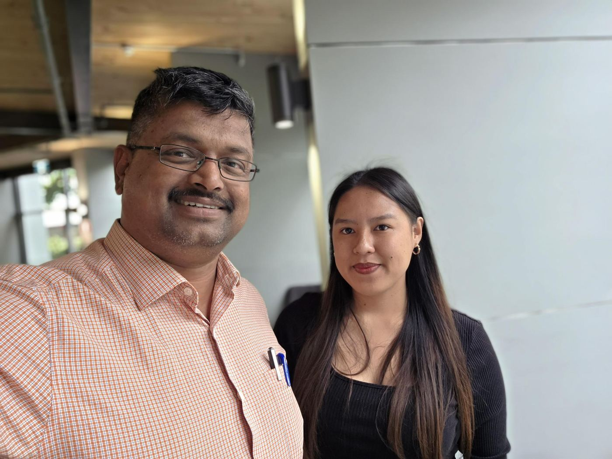

Teaching
I teach marketing as a practical discipline grounded in evidence. Students work with real brands, real data and current research, so they leave able to analyse a market and make a case for a decision.
Teaching since 2007
University teaching in New Zealand and Thailand, at undergraduate and postgraduate level.
Postgraduate courses
Courses I teach at postgraduate level.
Digital Marketing
Social media, search, content and analytics, and how to plan and measure digital campaigns.
Applied Research Methods
Designing a study, collecting data and analysing it with quantitative and qualitative methods.
Systematic Literature Reviews
Planning, running and reporting rigorous reviews, from search strategy to synthesis.
International Marketing
Entering and competing in overseas markets, and adapting strategy across cultures.
Strategic Marketing
Analysing markets and competitors and building marketing strategies that hold up.
Other courses I teach
Marketing Research · Consumer Behaviour · Marketing Management · Quantitative Analysis · Business Functions
Research supervision
master’s students have completed their research under my supervision.
Supervising research is one of the most rewarding parts of my work. As well as supervising at EIT, I take on the role of research supervisor at other institutions, including:
- University of Waikato
- Auckland University of Technology (AUT)
- Southern Institute of Technology (SIT)
I especially enjoy supervising research in:
- Technology adoption
- Technology impacts in retailing and consumer services
- Services marketing
- Tourism management
Thinking about a master’s research project in one of these areas? Send me a short outline of your topic and I’ll let you know whether it’s a good fit.
Student evaluations
Results from EIT’s anonymous student surveys for my postgraduate Digital Marketing course (DBPG 8.200). Every student agreed with each statement below.
Digital Marketing, Trimester 1 2026
Hawke’s Bay campus · 13 to 15 respondents
- The content of the course was interesting100%
- The assessments tested me on what I had been taught100%
- The course helped me develop my learning skills100%
- The content matched the course outline100%
- The assessments matched the learning outcomes100%
“The best thing is how Dr. John delivered the course. He provided detailed feedback on our first assessment which guided us on the preparation of our assessment 2.”
“The course was very insightful, interactive, and relevant to current trends.”
Digital Marketing, Term 3 2021
Auckland campus · 19 respondents · ratings of my teaching
- Has a positive relationship with students100%
- Is enthusiastic about the subject100%
- Is knowledgeable about the subject100%
- Is effective in helping me learn100%
- Provides useful feedback that helps my learning100%
- Made the content interesting and engaging100%
“His teaching style is very appropriate for a postgraduate course - guiding the students, getting their feedback, helping the class to learn from one another, instead of just spoonfeeding the knowledge.”
“Surej encourages class participation without being pushy or aggressive.”
In 2021, 95% also agreed that delivery was well organised and that expectations were clear; the remaining 5% (one student) were neutral.
In the classroom
Moments with my students at EIT.




Teaching experience
- NowEastern Institute of Technology, New ZealandSenior Lecturer in Marketing, School of Business. Marketing, research methods and decision-making courses.
- 3 yearsWaikato Management School, University of WaikatoInternational Marketing, Customer Relationship Marketing, Principles of Marketing and Marketing Research; supervised master’s dissertations.
- 2007–2015Assumption University, BangkokLecturer, then Assistant Professor of Marketing. Operations management, pricing strategies and quantitative analysis.
Thinking about studying marketing?
Ask about courses, research topics or supervision.